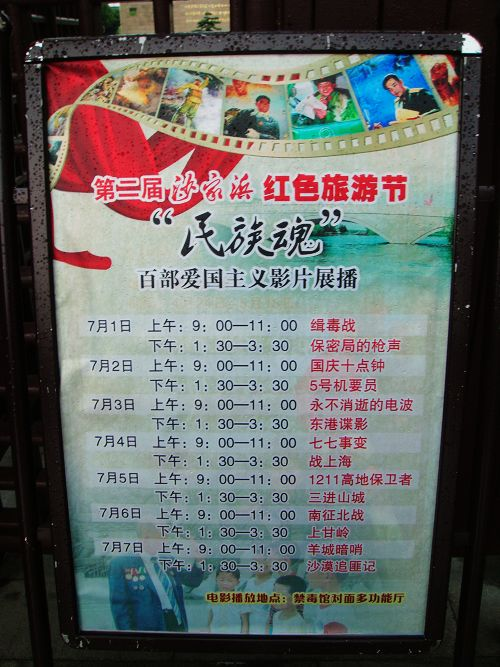

只是“到此一游”。 @ Jul 05, 2010
“七一”活动地点：沙家浜。
牺牲周末一天时间，8：30出发，路上2个多小时车程。到达后即在“五福酒店”吃午饭，饭后被雷电交加的大雨困住，打牌、聊天及发呆来消磨时间，雨渐渐小时，出去转一圈。门票100元每位，折后55元。地方政府以旅游带动经济的想法，在这座人工园子里处处可见，肯定花了不少钱建造。
虽然下了雨，天气依然闷热，我既带了草帽又带了雨伞，还穿了长袖衬衣。浑身粘糊糊的不知是汗还是雨水，感觉糟透了，值得庆幸的是带的卡片机。看了下园子里处处是公款来活动的各单位党员同志，谁自己花钱跑这儿旅游，脑子估计缺氧了。往年活动去的茅山，那次我没去，据说也是极其无趣。形式主义，什么时候才能消失？

江南也有好景色；

新四军官方英文缩写；

不知哪个单位的党员活动，搞得象摸象样，拉起旗帜来拍集体照。一阵风吹过，我的鸡皮疙瘩又出来了。
耳熟能详的革命电影在这里也能寻找到踪迹；

样板戏居然有日文和韩文版本；

第三代“春来茶馆”，面对面怎么也找不到茶馆的感觉，就是一个商业铺子；

没来得及去看南京的荷花，在沙家浜倒遇到，美；
摇浆于芦苇荡间，船程不长，边上的水芦叶子可以包粽子，江芦叶子就不行了。

卡片机拍摄的合影照，每个人看上去都很美。

横泾小街，人工制造，人为做旧，实在无趣；

“武大郎炊饼”的吆喝：潘金莲制造，西门庆监制。买了四包准备送给JM们吃，回家自己先尝了尝，直接扔垃圾桶了。

4 Responses to “只是“到此一游”。”
2010-07-05
你这个直接扔垃圾筒，笑死我了。心意收到啦！
2010-07-05
顶“垃圾桶”，哈哈哈
2010-07-06
啊？扔啦？狗也不吃啊？啊哈哈哈………
2010-07-06
这种天出门，要穿快干衣。
Leave A Reply
存档只读，评论已关闭。